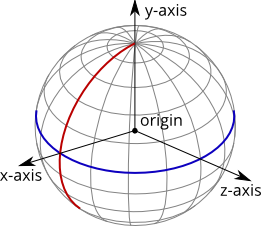

CelestialBody¶
-
class
SpaceCenter.CelestialBody¶ Represents a celestial body (such as a planet or moon).
-
name¶ The name of the body.
Property: Read-only, cannot be set Return type: string
-
satellites¶ A list of celestial bodies that are in orbit around this celestial body.
Property: Read-only, cannot be set Return type: list of CelestialBody
-
mass¶ The mass of the body, in kilograms.
Property: Read-only, cannot be set Return type: float
-
gravitational_parameter¶ The standardgravitational parameter of the body in \(m^3s^{-2}\).
Property: Read-only, cannot be set Return type: float
-
surface_gravity¶ The acceleration due to gravity at sea level (mean altitude) on the body, in \(m/s^2\).
Property: Read-only, cannot be set Return type: float
-
rotational_period¶ The rotational period of the body, in seconds.
Property: Read-only, cannot be set Return type: float
-
rotational_speed¶ The rotational speed of the body, in radians per second.
Property: Read-only, cannot be set Return type: float
-
equatorial_radius¶ The equatorial radius of the body, in meters.
Property: Read-only, cannot be set Return type: float
-
sphere_of_influence¶ The radius of the sphere of influence of the body, in meters.
Property: Read-only, cannot be set Return type: float
-
has_atmosphere¶ Trueif the body has an atmosphere.Property: Read-only, cannot be set Return type: bool
-
atmosphere_depth¶ The depth of the atmosphere, in meters.
Property: Read-only, cannot be set Return type: float
-
has_atmospheric_oxygen¶ Trueif there is oxygen in the atmosphere, required for air-breathing engines.Property: Read-only, cannot be set Return type: bool
-
reference_frame¶ The reference frame that is fixed relative to the celestial body.
- The origin is at the center of the body.
- The axes rotate with the body.
- The x-axis points from the center of the body towards the intersection of the prime meridian and equator (the position at 0° longitude, 0° latitude).
- The y-axis points from the center of the body towards the north pole.
- The z-axis points from the center of the body towards the equator at 90°E longitude.
Property: Read-only, cannot be set Return type: ReferenceFrameCelestial body reference frame origin and axes. The equator is shown in blue, and the prime meridian in red.
-
non_rotating_reference_frame¶ The reference frame that is fixed relative to this celestial body, and orientated in a fixed direction (it does not rotate with the body).
- The origin is at the center of the body.
- The axes do not rotate.
- The x-axis points in an arbitrary direction through the equator.
- The y-axis points from the center of the body towards the north pole.
- The z-axis points in an arbitrary direction through the equator.
Property: Read-only, cannot be set Return type: ReferenceFrame
-
orbital_reference_frame¶ Gets the reference frame that is fixed relative to this celestial body, but orientated with the body’s orbital prograde/normal/radial directions.
- The origin is at the center of the body.
- The axes rotate with the orbital prograde/normal/radial directions.
- The x-axis points in the orbital anti-radial direction.
- The y-axis points in the orbital prograde direction.
- The z-axis points in the orbital normal direction.
Property: Read-only, cannot be set Return type: ReferenceFrame
-
position(reference_frame)¶ Returns the position vector of the center of the body in the specified reference frame.
Parameters: reference_frame (ReferenceFrame) – Return type: tuple of (float, float, float)
-
velocity(reference_frame)¶ Returns the velocity vector of the body in the specified reference frame.
Parameters: reference_frame (ReferenceFrame) – Return type: tuple of (float, float, float)
-
rotation(reference_frame)¶ Returns the rotation of the body in the specified reference frame.
Parameters: reference_frame (ReferenceFrame) – Return type: tuple of (float, float, float, float)
-
direction(reference_frame)¶ Returns the direction in which the north pole of the celestial body is pointing, as a unit vector, in the specified reference frame.
Parameters: reference_frame (ReferenceFrame) – Return type: tuple of (float, float, float)
-
angular_velocity(reference_frame)¶ Returns the angular velocity of the body in the specified reference frame. The magnitude of the vector is the rotational speed of the body, in radians per second, and the direction of the vector indicates the axis of rotation, using the right-hand rule.
Parameters: reference_frame (ReferenceFrame) – Return type: tuple of (float, float, float)
-